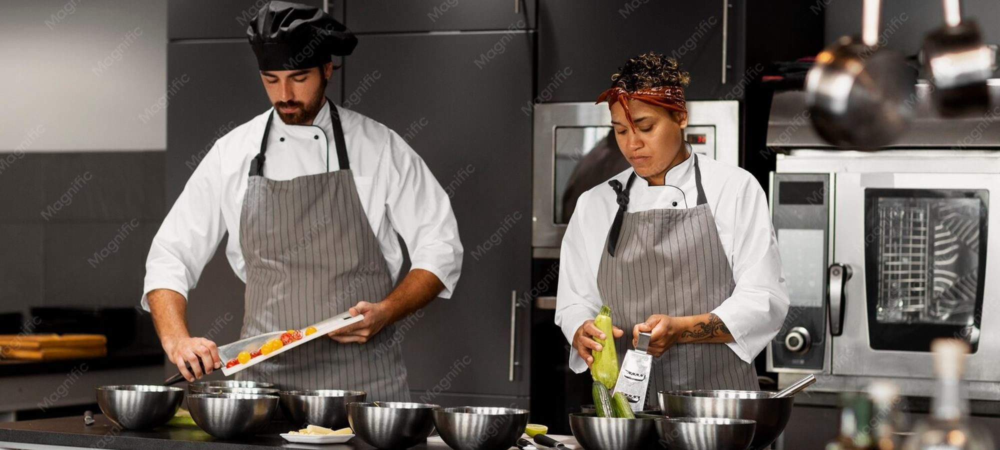

L'atelier des Chefs ou YouSchool pour un CAP cuisine en 2026 ?
Deux écoles à distance, un seul diplôme d'État à la sortie.

CAP cuisine, CAP pâtissier, boulangerie, chocolaterie. Nous comparons les volumes horaires publiés, le nombre d'exercices pratiques corrigés, les tarifs et les avis élèves avant de classer les écoles.

Deux écoles à distance, un seul diplôme d'État à la sortie.


Deux écoles à distance, un seul diplôme d'État à la sortie.
Douze écoles de formation à distance passées au crible sur le CAP cuisine, tarifs affichés relevés sur les sites officiels en septembre 2026, volumes horaires annoncés et nombre de devoirs pratiques réellement corrigés par un formateur.
Quatre voies principales mènent au CAP pâtissier après 25 ans, plus trois variantes que peu de candidats connaissent.
10 organismes de formation à distance comparés sur le seul CAP électricien, programmes publiés en main.
Dix écoles préparant le BTS Diététique hors présentiel, tarifs relevés sur les sites officiels en septembre 2026, de 1 590 € à 4 490 € pour les deux années.

Tarifs relevés sur les sites officiels de 14 écoles en septembre 2026, du CAP cuisine au BTS diététique.
Note globale sur 10 sur le seul univers cuisine. La pratique corrigée pèse plus lourd qu'ailleurs, parce qu'un CAP de métier de bouche se joue sur le geste et sur l'épreuve pratique.
Voir la méthode de notation


Comparez deux organismes sur nos cinq critères en un clic.
Sur nos relevés de septembre 2026, L'atelier des Chefs obtient la meilleure note globale de l'univers cuisine avec 8,9/10, grâce à 108 exercices pratiques corrigés par des chefs et à la possibilité de compléter par un atelier en présentiel. YouSchool suit à 8,6/10, le CNED à 8,4/10.
Oui. Le CAP Cuisine est un diplôme d'État de niveau 3, l'inscription à l'examen se fait en candidat libre auprès de l'académie, quelle que soit la voie de préparation. La formation à distance prépare aux épreuves, elle ne délivre pas le diplôme.
Entre 990 € au CNED et 3 190 € chez les écoles privées les plus complètes, avec une moyenne de panel à 2 180 € en septembre 2026. Le détail école par école est dans notre comparatif de 12 organismes.
Oui pour les candidats scolaires, non pour les candidats libres qui doivent en revanche justifier de compétences pratiques suffisantes le jour de l'épreuve. La plupart des écoles du panel imposent 12 à 14 semaines de stage et aident à le trouver.
Six mois si vous êtes déjà titulaire d'un CAP, d'un bac ou d'un diplôme supérieur, grâce aux dispenses d'épreuves générales. Douze à dix-huit mois sinon, selon le rythme et l'organisme.
Un email par semaine, le classement du mois, les nouveaux comparatifs de formations et les sessions qui ouvrent.
Pas de publicité, désinscription en un clic.